脸型
可爱 VRoid 脸：虹膜、眼睛、眉毛、阴影和参数
虹膜
暗色贴着方块左下角，亮色留在右上方
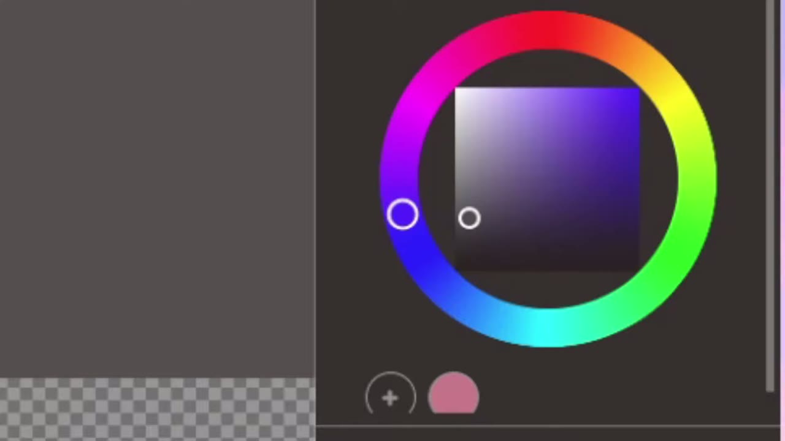
动手前口播要先关掉线、阴影和边缘光，方便看贴图；画面上当时停在 Look 的 Rim Light。贴图可以右键图层点 Export，再拿去别的软件画，口播说免费的可以用 Krita。选色时口播说：想亮就不要太灰，色点放在方块的上方或中部、再靠右；黑和灰不要用纯黑纯灰，先选一个色相，再让色点几乎贴住方块左下角。这一帧就是后一种，色相在蓝紫，色点贴着左下。阴影色的口播是：吸住底色，色相环往左或往右拧一格，再略往下、往右。
自己铺一层，中间收深
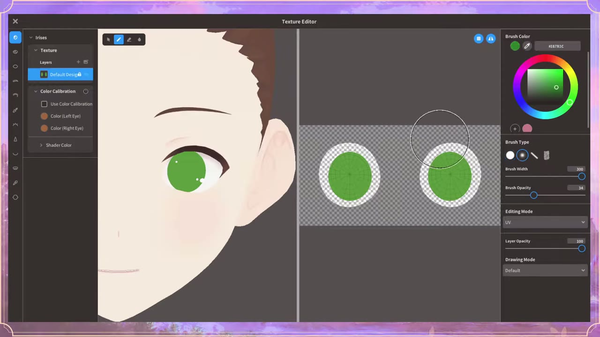
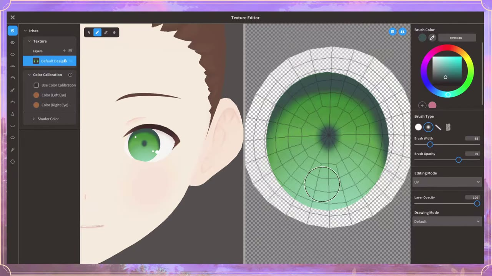
进 Irises，在 Default Design 上盖掉默认的棕色虹膜。铺绿色之前，她用接近黑的棕色把瞳孔涂实，笔宽读到 300，色值是 #171615，用的是喷枪。绿色这一笔，色点在方块右上方，对应口播说的亮色位置。接着把虹膜放大，从外圈往中心收：外圈是较浅的绿，中心压深。口播说瞳孔的形状和颜色没有固定画法，要看参考，自己试。
眼睛
主要高光只放在一侧
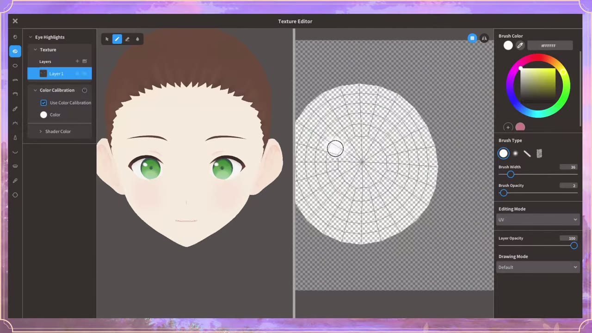
高光画在 Eye Highlights 的 Layer 1 上，颜色是白，色值 #FFFFFF，喷枪，笔宽 36，不透明度 2。白点落在虹膜圆的左侧，没有在对面再补一块对称的。口播说主要高光不要开镜像，否则两只眼睛会看起来斗鸡眼，并说给了对比；对比时画面切回角色，没有并排的参数表。眼白口播说看风格，但不要用饱和的红去涂，否则像充血。睫毛口播说可有可无，这一段她跳过了。
眼褶画在眼睑上，不画在脸皮上
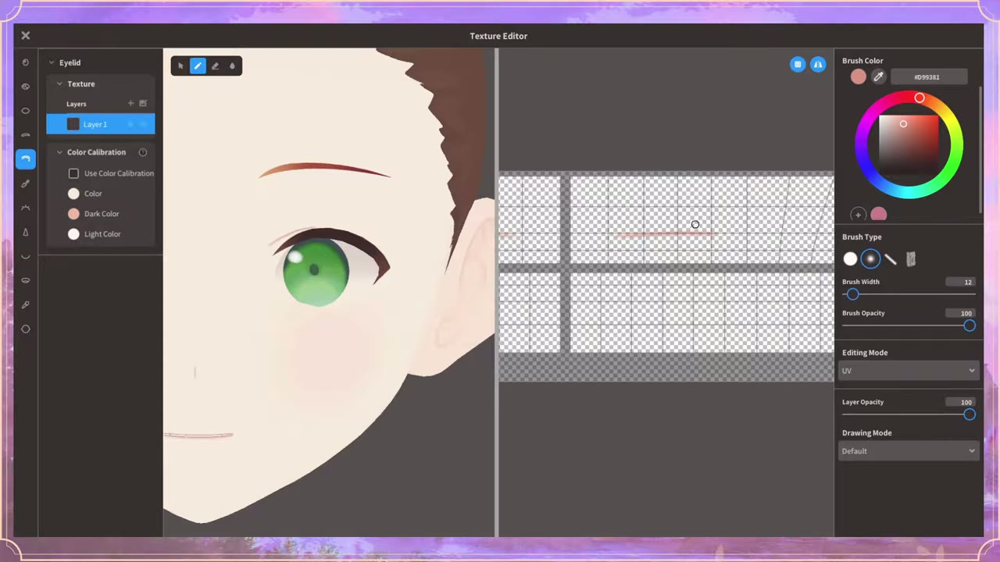
眼褶不要画进脸部皮肤，眼影除外。口播说折痕放在眼睑贴图里。画面上是 Eyelid 的 Layer 1，Use Color Calibration 没勾，上眼睑 UV 里只拉了一条很细的线，预览里眼睛上方刚露出一条浅痕。
眼线自己画一条带尾的
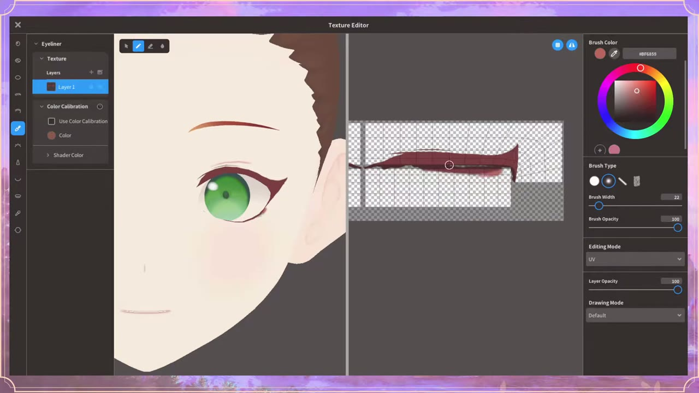
眼线用自己的贴图，不要只留默认。这一帧在 Eyeliner 的 Layer 1 上画一条偏深的红褐线，外眼角拉出尾巴。口播说基础画法是眼线两侧再加一笔更浅的，中间留一笔亮的；浅色那两笔在这张画面上还没出现。口播还说眼线越宽、眼睛越长越可爱，越短越小越成熟，这是后面参数段的事。
眉毛
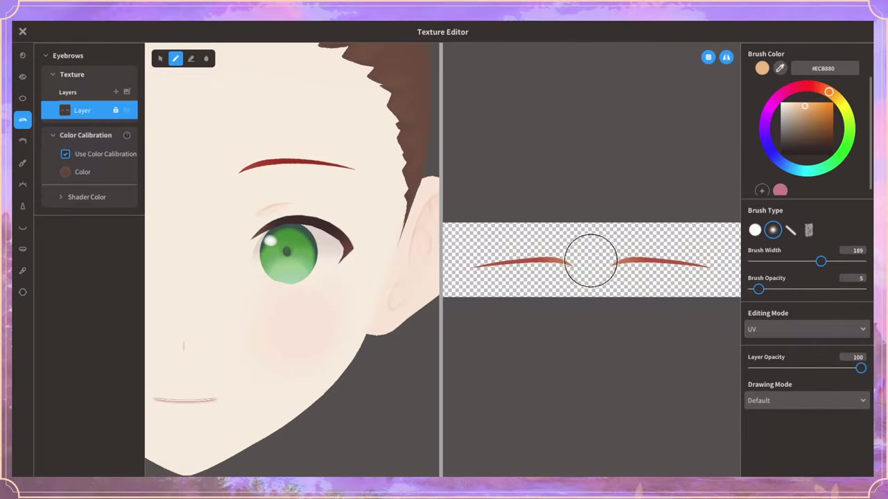
眉毛也是自己画。口播说要柔的话，尾端用深色，眉头用浅色。画面上眉身已经是一条深棕，喷枪正在眉头这一段扫更浅的颜色，所以靠近中间的一头比尾巴淡。形状本身口播说随角色，没有再给固定弧度。
阴影
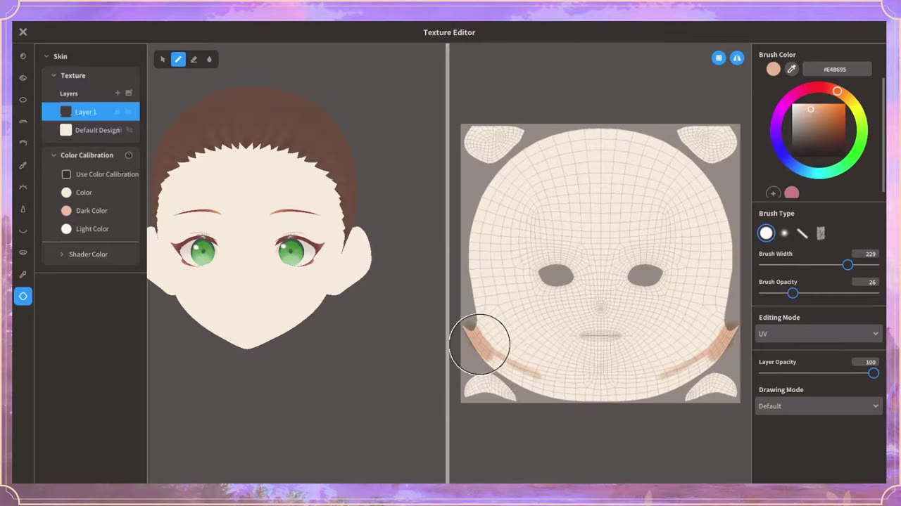
口播说她用的是旧版 VRoid，嘴唇、眼影、脸颊、鼻子是分开的，她不喜欢这样，所以把这些分类删回脸部贴图，再在脸上一起画。右键图层时菜单里能看见 Delete。先用线在发际和眼周标出阴影该在的位置，再在 Skin 的 Layer 1 上画。这一帧暗部落在下巴两侧，是一条贴着下颌的肤色，脸心还是亮的。接着会在同一张 UV 的嘴缝上拉一条细线，当简单的唇线。口播说颜色继续用前面的选色方法，风格按自己平时的画法。
脸部参数
虹膜间距拉开一点
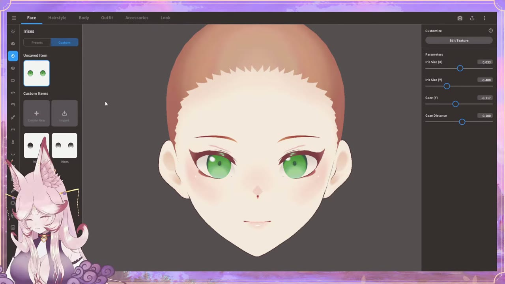
Face → Irises。这一帧 Iris Size (X) 是 0.033，Iris Size (Y) 是 -0.400，Gaze (Y) 是 -0.117，Gaze Distance 是 0.100，间距这根的圆点在中线右边。口播说间距她习惯放在 0.1 左右，再小就会显得斗鸡眼；大小和视线看角色。瞳孔越大越幼，也是口播，这一帧的虹膜尺寸并没有往大里推。眉毛参数她几乎没动：Eyebrows Tilt 是 -0.125，Eyebrows Position (Y) 是 -0.800，后面能看见的几根都是 0.000。口播说眉毛看角色，没有再讲。
眼睛拉宽拉高，下垂另说
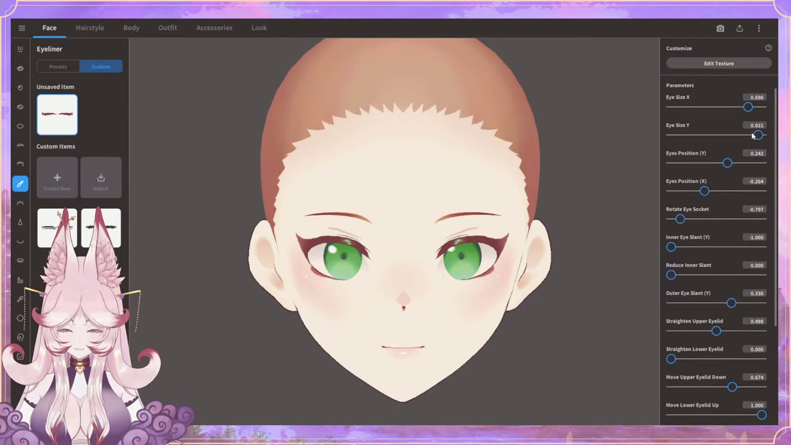
眼型滑杆在 Face → Eyeliner，不是单独的 Eyes。光标拖着 Eye Size Y。这一帧 Eye Size X 0.696，Eye Size Y 0.921，Eyes Position (Y) 0.242，Eyes Position (X) -0.264，Rotate Eye Socket -0.797，Inner Eye Slant (Y) -1.000，Reduce Inner Slant 0.000，Outer Eye Slant (Y) 0.330，Straighten Upper Eyelid 0.498，Straighten Lower Eyelid 0.000，Move Upper Eyelid Down 0.674，Move Lower Eyelid Up 1.000。脸上眼睛又宽又高，外眼角略翘。口播说越宽越长越可爱，越短越小越成熟；成熟也可以眼睛仍宽、但彼此靠拢，要几根一起看。同一列再往下，稍后 Droopy Eyes 停在 0.366，光标在这根上。口播说下垂更软，不往下垂则更像傲娇。
嘴和脸的长短
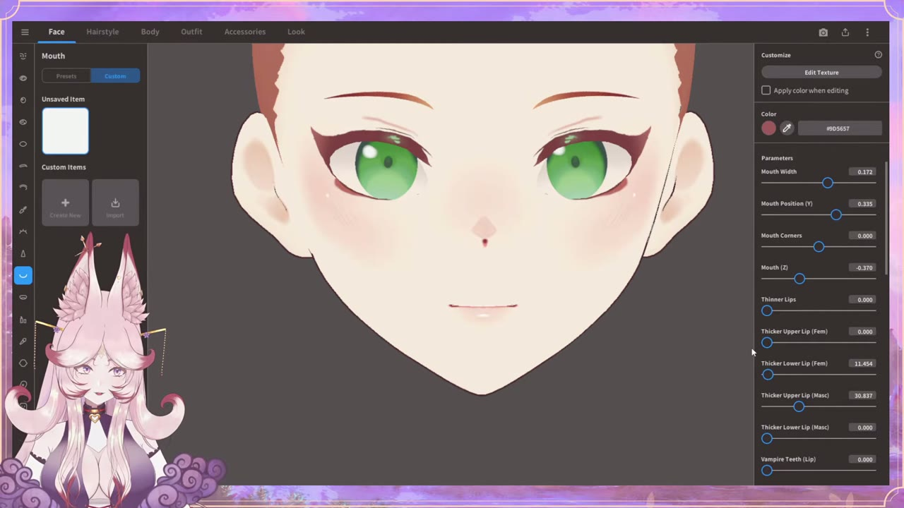
Face → Mouth。唇色是 #9D5657。Mouth Width 0.172，Mouth Position (Y) 0.335，Mouth Corners 0.000，Mouth (Z) -0.370，Thinner Lips 0.000。Thicker Upper Lip (Fem) 是 0.000，光标指着这一行；Thicker Lower Lip (Fem) 是 11.454，Thicker Upper Lip (Masc) 是 30.837，Thicker Lower Lip (Masc) 和 Vampire Teeth (Lip) 都是 0.000。口播说她不用女性加厚，中间会往里瘪，像填充做坏了，所以改用男性下唇；这一帧男性下唇仍是 0.000，数值被推高的是女性下唇和男性上唇。鼻子口播说越高越小越幼，越长越低越成熟，她只是在鼻子面板上拨了几根，标签和数字对不齐的不记。切到脸的 Skin 时，Chin Roundness 是 0.137，Chin Length 是 -0.176，Fem Face 推到 1.000。口播说脸越长越成熟，越短越圆越幼。
头宽往左收，脸会更窄
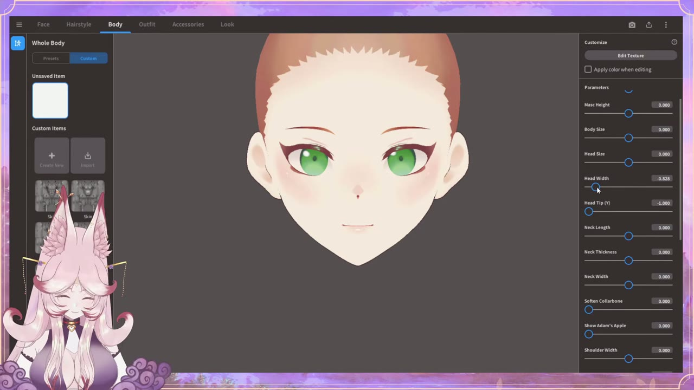
最后到 Body → Whole Body。光标按在 Head Width 上，这一帧是 -0.828，Head Tip (Y) 是 -1.000，Masc Height、Body Size、Head Size、脖子和肩膀那几根都是 0.000。再往后 Head Width 被推到 -1.000，头更窄。口播说头宽越低越成熟，越宽越软、越幼；这一段她是在往窄的那边示意。